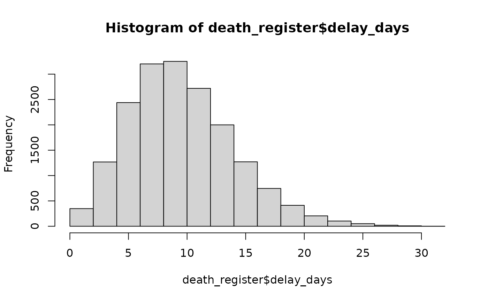
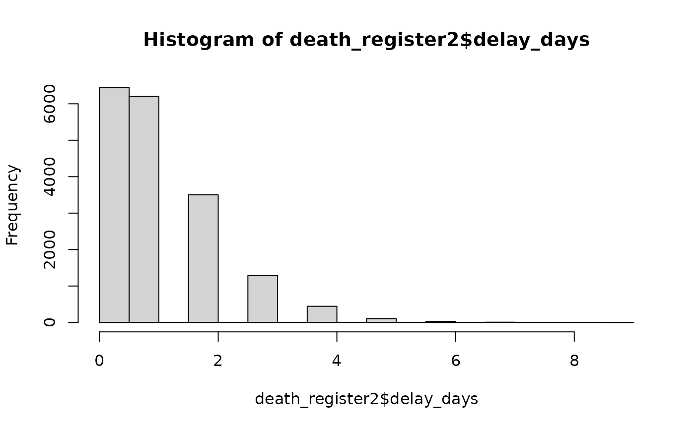

Simulating mortality data
Chi Zhang
2022-03-31
Source:../vignettes/simulate_mortality_data.Rmd
simulate_mortality_data.RmdThis document provides information on how to simulate mortality data. There are two kinds of mortality data: event and registration.
Simulate mortality event
We simulate mortality events (deaths) based on real-life mortality pattern in Norway. Each year there are roughly 43000 deaths in Norway (0.8%) in total, from 11 counties. There are seasonal variations as well: winter seasons have more deaths than the other seasons.
We simulate daily deaths for each county. Afterwards, it is convenient to aggregate by time (weekly, quarterly, yearly) and into national total.
Models
Examples
use poisson model with 25 daily expected events
# specify time period
start_date <- '2018-01-01'
end_date <- '2019-12-31'
# use poisson model with 25 daily expected events
death_events_poi <- simulate_daily_death_event(
start_date = start_date,
end_date = end_date,
model = 'poisson',
param_list = list(lambda = 25)
)
death_events_poi
#> id date
#> 1: 1 2018-01-01
#> 2: 2 2018-01-01
#> 3: 3 2018-01-01
#> 4: 4 2018-01-01
#> 5: 5 2018-01-01
#> ---
#> 18043: 18043 2019-12-31
#> 18044: 18044 2019-12-31
#> 18045: 18045 2019-12-31
#> 18046: 18046 2019-12-31
#> 18047: 18047 2019-12-31Use Gaussian model (approximation) with mean 25 and standard deviation 2:
death_events_norm <- simulate_daily_death_event(
start_date = start_date,
end_date = end_date,
model = 'norm_approx',
param_list = list(mu = 25, sigma = 2)
)
death_events_norm
#> id date
#> 1: 1 2018-01-01
#> 2: 2 2018-01-01
#> 3: 3 2018-01-01
#> 4: 4 2018-01-01
#> 5: 5 2018-01-01
#> ---
#> 18215: 18215 2019-12-31
#> 18216: 18216 2019-12-31
#> 18217: 18217 2019-12-31
#> 18218: 18218 2019-12-31
#> 18219: 18219 2019-12-31Count daily death events (with the possibility to visualize)
death_count_poi <- death_events_poi[, list(n_event = .N), by = date]
death_count_poi
#> date n_event
#> 1: 2018-01-01 21
#> 2: 2018-01-02 31
#> 3: 2018-01-03 31
#> 4: 2018-01-04 27
#> 5: 2018-01-05 17
#> ---
#> 726: 2019-12-27 26
#> 727: 2019-12-28 26
#> 728: 2019-12-29 24
#> 729: 2019-12-30 20
#> 730: 2019-12-31 17
# death_count_norm <- death_events_norm[, list(n_event = .N), by = date]Simulate mortality registration
Registration, or reporting is an important aspect in mortality data. Different reporting systems can have different delays after death event. For example, deaths that are registered electronically have shorter reporting delays (usually within days) than paper-based reports. Some deaths require post-morten (autopsy) to determine the cause of death, and can therefore take longer.
# use the simulated death event data from the poisson model
death_register <- simulate_registration(death_data = death_events_poi)
print(death_register)
#> id date delay_days date_reg
#> 1: 1 2018-01-01 7 2018-01-08
#> 2: 2 2018-01-01 9 2018-01-10
#> 3: 3 2018-01-01 9 2018-01-10
#> 4: 4 2018-01-01 11 2018-01-12
#> 5: 5 2018-01-01 15 2018-01-16
#> ---
#> 18043: 18043 2019-12-31 9 2020-01-09
#> 18044: 18044 2019-12-31 12 2020-01-12
#> 18045: 18045 2019-12-31 8 2020-01-08
#> 18046: 18046 2019-12-31 13 2020-01-13
#> 18047: 18047 2019-12-31 4 2020-01-04
hist(death_register$delay_days)
# different parameters
death_register2 <- simulate_registration(death_data = death_events_poi, r = 10, p = 0.9)
hist(death_register2$delay_days)